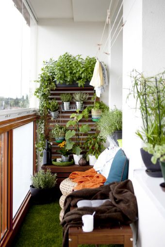

Transforme Pequenos Espaços em Hortas Verticais
Transforme qualquer espaço pequeno em um oásis verde com uma horta vertical! Essa é uma meneira eficiente de cultivar ervas, temperos e até pequenos vegetais em casa, usando paredes ou grades para maximizar o espaço. Além de ser uma prática sustentável, as hortas verticais adicionam um toque de natureza ao seu ambiente urbano. Aprenda aqui como escolher as plantas certas, instalar seu sistema vertical e cuidar de sua horta ao longo do ano.
